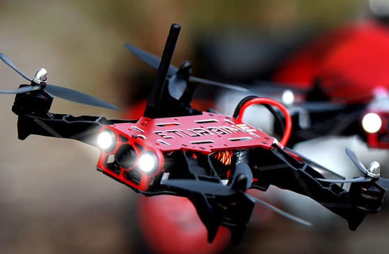

King of the Race
Гоночный квадрокоптер представляет собой небольшой беспилотный летательный аппарат, специализацией которого является участие в спортивных мероприятиях класса дрон рейсинг.
Профессиональные пилоты предпочитают создавать свои машины с нуля. Они скрупулезно подбирают все необходимые компоненты, а затем самостоятельно занимаются сборкой личного гоночного квадрокоптера и его настройкой. Некоторые эксперты разрабатывают и собственное программное обеспечение.
Я подобрал несколько популярных комплектов для сборки квадрокоптеров, описал их хар-ки и сделал вывод о возможностях каждого
1
ZMR250
- Стоимость 70$
- Масса 350g-500g
- Максимальная скорость 70-80km/h
- Время полёта 10-15 минут
- Итог: недорогой дрон для начинающих, легко управляется, увеличенное время полёта помогает освоиться начинающим пилотам
2
Mobula 8
- Стоимость 110$
- Масса 40g-80g
- Максимальная скорость 25-30km/h
- Время полёта 3-4 минуты
- Итог: мини дрон для помещений, который не боится ударов и встрясок, но на улице теряется на фоне старших собратьев
3
QAV-R
- Стоимость 180$
- Масса 250g-400g
- Максимальная скорость 120-140km/h
- Время полёта 5-6 минут
- Итог: отличный дрон для фристайла, имеет высокую скорость и отличную манёвренность, но более сложен в управлении, поэтому рекомендуется опытным пилотам